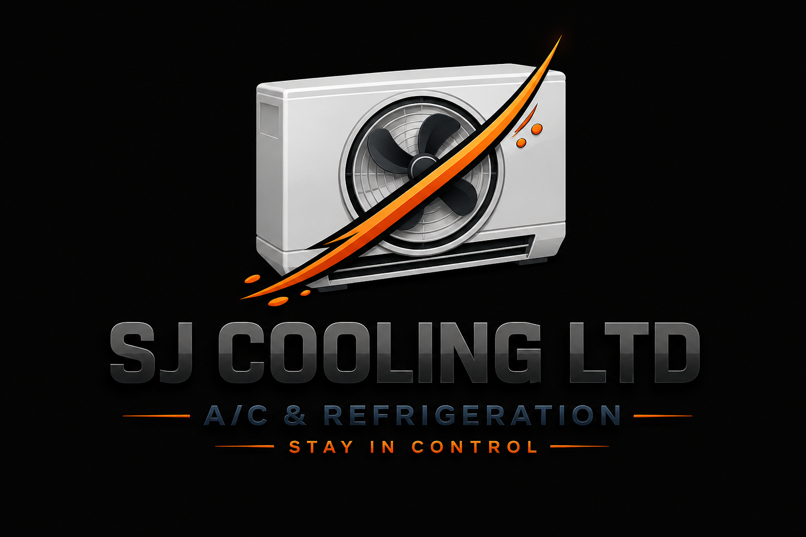

Stay in control
Reliable installation, servicing & repairs you can trust
Our team is made up of fully qualified and insured technicians who are committed to delivering the highest standard of service to every customer. We take great pride in the quality of our workmanship and the professionalism we bring to every project, no matter the size or complexity. With many years of hands-on experience in the industry, our technicians have developed the skills and knowledge needed to handle a wide range of air conditioning systems with confidence and precision. We believe that staying up to date is essential in a fast-moving industry, which is why our team regularly undergoes ongoing training to keep up with the latest advancements in air conditioning technology. This allows us to offer modern, energy-efficient solutions that not only improve performance but can also help reduce running costs for our customers. From installation to maintenance and repairs, we apply the latest techniques and best practices to ensure optimal results every time. Customer satisfaction is at the heart of everything we do, and we understand that every home and business has unique cooling requirements, so we take the time to listen carefully and provide tailored solutions that meet your specific needs. Our technicians work efficiently and respectfully, ensuring minimal disruption while maintaining a clean and safe working environment at all times. When you choose our services, you can have complete peace of mind knowing that your system is in capable and experienced hands, as our certified professionals are dedicated to delivering reliable, efficient, and long-lasting solutions that you can depend on for years to come.
Installation, servicing and repairs
Cold rooms, freezers and maintenance
Domestic and commercial services
Phone: 07XXX XXX XXX
Email: info@sjcoolingltd.co.uk